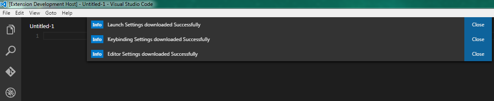
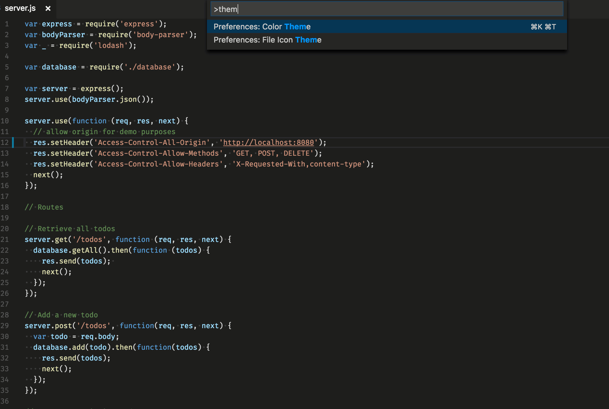

Customize VS Code Extension Roundup
December 12, 2016 - Wade Anderson, @waderyan_
You can customize Visual Studio Code in many ways. Install a new theme, add a snippet pack, or tweak your settings and keyboard shortcuts. We built VS Code to be flexible so you can make it work the way you do. You can install an extension from the VS Code Marketplace or create your own (see here to get started writing an extension in JavaScript or TypeScript). In this blog, I want to highlight a few of my favorite extensions for customizing VS Code.
Tip: Do you miss the keyboard shortcuts from Atom, Sublime Text, or Visual Studio? You can install a Keymap extension today to use those keyboard shortcuts in VS Code. See the full list of keymap extensions in the Marketplace.
Settings Sync
Marketplace - Visual Studio Code Settings Sync
Publisher - Shan Khan
Do you use VS Code on multiple machines and wish you could easily share settings? Even using VS Code in a VM on the same machine will make it so your settings, snippets, etc. aren't the same. This extension solves this synchronization problem and is one of the highest rated in the Marketplace. The extension uses a private Gist on GitHub to share your VS Code settings, snippets, keybindings, etc across different machines. You can also make the Gist public to share your settings with others.

Themes Galore
Color themes are important. When you are staring at your editor for hours each day, you want to look at something nice! I find myself changing my theme regularly to mix things up (in fact, that would be a fun extension for someone to make - an extension that changes the theme on a regular interval). There are hundreds of color themes in the VS Code Marketplace to install. You can preview your installed themes in VS Code by File > Preferences > Color Theme or by opening the Command Palette and typing "theme".
Some of my favorite themes are:
- Sublime Material Theme from Jarvis Prestidge
- Flatland Monokai Theme from gerane
- Hopscotch (Official) from idleberg
- One Monokai Theme from Joshua Azemoh

Tip: Color themes are tagged
color-themeon their Marketplace page.
Want to create your own theme? See the documentation to get started.
VS Code also supports File Icon themes to add images to files and folders in the UI. You can preview your installed File Icon themes in VS Code by File > Preferences > File Icon Theme or by opening the Command Palette and typing "file icon".
Here are two File Icon themes I really like:
Tip: File Icon themes are tagged
icon-theme.
Snippets Aplenty
Do you use snippets while writing code? Many snippets come built into VS Code and are shown in the IntelliSense suggest window while you type.
When you start using a new library or framework, check the Marketplace to see if there is a snippet pack for it. There are snippet packs for many popular JavaScript frameworks.
- Bootstrap 3 from William Whitehead
- Angular 2 from John Papa
- jQuery from Don Jayamanne
Many language extensions come with snippets included.
- Python from Microsoft
- Power Shell from Microsoft
- Ruby from Peng Lv
- C# from Microsoft
- Elm from Sascha Brink
Want to make your own snippet pack? See the documentation for how to create a snippet pack extension.
Tip: You can search for extensions by category or tag in the Extensions view search box, using "category:{category name}" or "tag:{tag name}".
Wade Anderson, VS Code Team Member @waderyan_